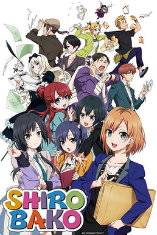

Yesterday I decided that I should do 0 work therefore I watched anime for the whole day. I watched three anime series. The first one is Gridman Universe, the second one is Shirobako, the third one is Shirobako: The Movie. If to find a commonality between the three, it is that it's way toooo positive. But it is this overwhelming positiveness that managed to give me courage and motivation. Just like what Miyamori and her high school friends often says "Don Don Donuts Do-n to Ikou".
